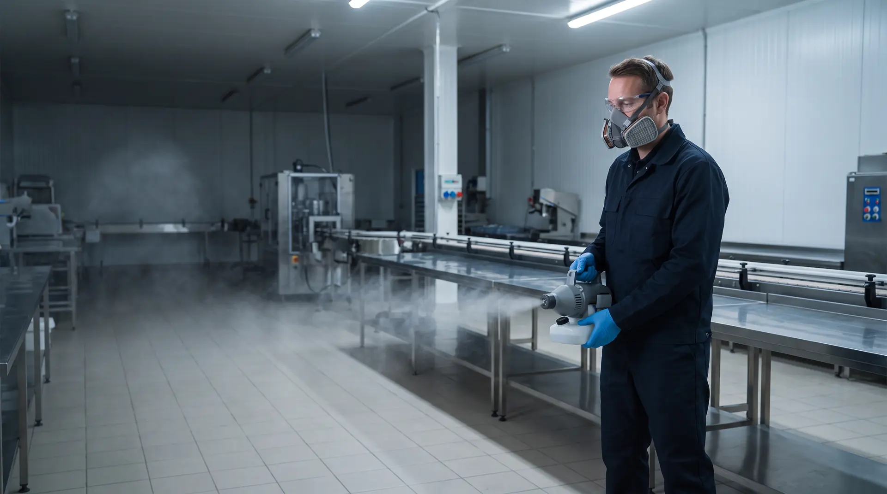
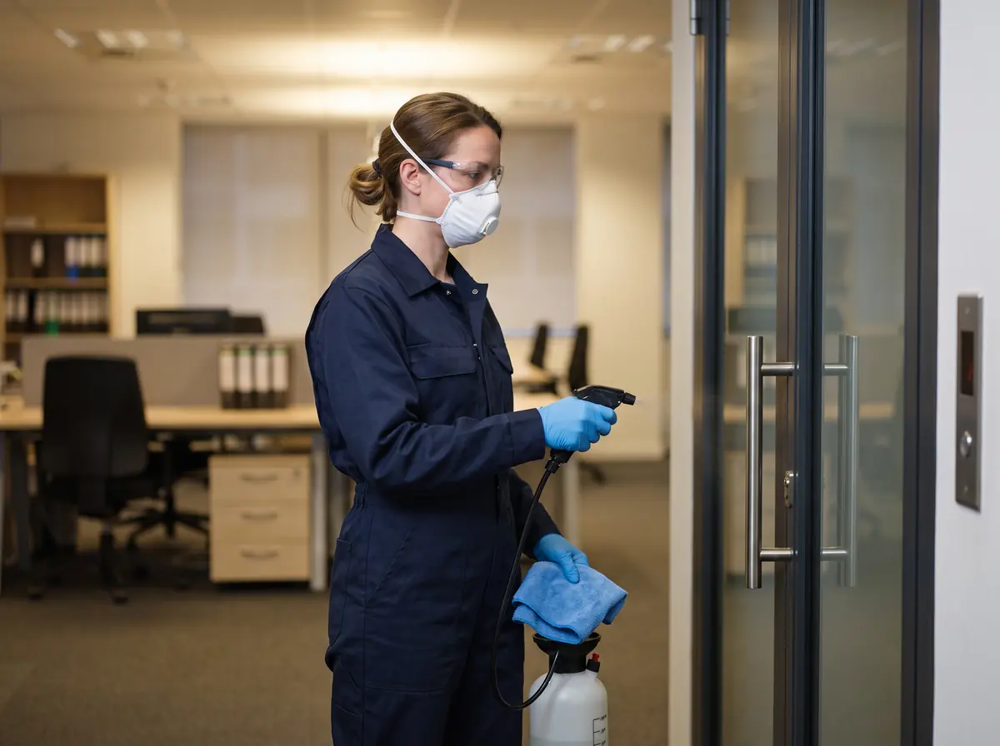

Сначала убрать грязь
Сухая уборка, мойка, ополаскивание. Без этого этапа средство не достаёт до микроорганизмов, поэтому он идёт перед любой дезинфекцией.

Обеззараживаем помещения, оборудование и воздух от бактерий, вирусов и грибов — и закрываем весь санитарный контур объекта: дезинсекция, дератизация, вентиляция, санитарный аудит и пест-контроль по системе IPM. По лицензии, с актом и записью в журнале после каждого выезда.
Дезинфекция — это уничтожение или удаление возбудителей инфекций — бактерий, вирусов, грибов и их спор — на поверхностях, оборудовании, в воздухе и системах вентиляции. Её задача — прервать путь, по которому инфекция переходит к человеку. Организации и ИП обязаны обеспечивать дезинфекционные мероприятия на своих объектах — своими силами или через специализированную организацию (п. 88 СанПиН 3.3686-21).

| Работа | Против чего | Что защищаем | Подробнее |
|---|---|---|---|
| Дезинфекция | Бактерии, вирусы, грибы | Поверхности, оборудование, воздух, вентиляцию | Виды и методы — ниже |
| Дезинсекция | Тараканы, мухи, моль, муравьи, клопы и другие членистоногие | Продукцию, помещения, людей от насекомых-переносчиков | Дезинсекция для организаций |
| Дератизация | Крысы и мыши | Здания, склады и продукцию от грызунов | Дератизация для организаций |
Обновлено 06.11.2026 · Нормативная база проверена на 06.11.2026 · Материал подготовили специалисты ООО «Центр дезинфекционных услуг»
То, что по привычке называют «вызвать СЭС», — это услуги ниже. Каждую можно заказать отдельно или собрать в одну программу обслуживания — с общим договором, графиком и пакетом документов.
Плановое обеззараживание контактных поверхностей, санузлов, оборудования, тары, холодильных камер и мест накопления отходов — по графику вашей программы производственного контроля.
Виды дезинфекцииМикробиологические смывы с поверхностей и оборудования, пробы воздуха, исследования на легионеллы — через аккредитованную лабораторию. Протоколы для производственного контроля и проверок.
Как контролируемВоздуховоды, кухонные вытяжки, фанкойлы и сплит-системы: очистка, дезинфекция, смывы и запись в журнал по МР 3.5.0396-25.
Страница услугиТараканы, мухи, моль, муравьи, клопы: точки контроля, гели без остановки работы, ночные обработки и ротация средств.
Страница услугиТри контура защиты от крыс и мышей: контейнеры по периметру, ловушки без яда в цехах, ежемесячный учёт и схема точек.
Страница услугиПроверка объекта и документов по проверочным листам Роспотребнадзора и СанПиН 2026 года — до визита инспектора или аудитора сети.
Страница услугиМониторинг, прогноз и устранение причин, обработки — по показаниям. Программа и журнал для ХАССП и аудитов.
Как устроен IPMОдин договор на все виды работ: график визитов, сроки реагирования, акт после каждого выезда, цена до подписания.
Условия договораВ санитарных правилах дезинфекционная деятельность — не только обеззараживание. В неё входят борьба с патогенными микроорганизмами, возбудителями инвазионных болезней, грызунами и их эктопаразитами, кровососущими членистоногими и другими насекомыми, имеющими медицинское значение (п. 79 СанПиН 3.3686-21).
Профилактическая дезинфекция в широком смысле включает дезинфекцию, дезинсекцию, дератизацию и дезинвазию (п. 80). Поэтому специалиста называют дезинфектором, научную область — дезинфектологией, а лицензия Роспотребнадзора выдаётся сразу на услуги по дезинфекции, дезинсекции и дератизации. Поэтому и наша компания называется «Центр дезинфекционных услуг».
Цель у всех этих работ одна — прервать механизм передачи инфекции (п. 40 СанПиН 3.3686-21). Возбудитель попадает к человеку разными путями, и на каждом нужен свой барьер.
Для организаций основная работа — профилактическая дезинфекция (п. 80 СанПиН 3.3686-21): она не даёт микроорганизмам накапливаться на поверхностях, в оборудовании и воздухе. Плановую проводят по графику программы производственного контроля, внеплановую — по санитарно-гигиеническим показаниям (п. 3.1 МР 3.5.0353-24).
| Вид | Когда | Что обрабатываем | Кто проводит |
|---|---|---|---|
| Плановая | По графику программы производственного контроля — с кратностью по санитарным правилам для вашего объекта | Контактные поверхности, санузлы, оборудование, тару, камеры, мусоросборники, воздух, вентиляцию | Ежедневно — ваш персонал, плановые и сложные работы — специализированная организация |
| Генеральная в санитарный день | На пищевом производстве — 1 раз в месяц, в общепроизводственный санитарный день (п. 3.6 МР 3.5.0353-24); на других объектах — по графику предприятия | Всё оборудование, помещения, инвентарь и тару | Персонал предприятия и специализированная организация |
| Внеплановая по санитарно-гигиеническим показаниям | Замечания производственного контроля или аудита, неудовлетворительные смывы, авария, затопление стоками | Зону замечаний или аварии и прилегающие помещения | Специализированная организация |
Сам факт обработки инспектор видит по акту и журналу, а результат — по протоколам лабораторных исследований: смывам с поверхностей и пробам воздуха (как контролируем). Порядок санитарной обработки на пищевых предприятиях — МР 3.5.0353-24.
Срочный выезд — в течение 3 часов по Москве и Московской области, ночные и выходные окна — без наценки.
Режим дезинфекции подбираем под возбудитель, объект и материал. Средство, концентрацию, время выдержки и способ нанесения берём из инструкции к средству с разрешительными документами ЕАЭС (п. 84 СанПиН 3.3686-21). У средств разное действие — бактерицидное, вирулицидное, фунгицидное и спороцидное, — и каждое подтверждается испытаниями (Р 4.2.3676-20).
Сухая уборка, мойка, ополаскивание. Без этого этапа средство не достаёт до микроорганизмов, поэтому он идёт перед любой дезинфекцией.
Протирание, орошение, пена, аэрозоль (холодный туман) — для поверхностей, оборудования, тары, санузлов, больших объёмов складов и вентиляции.
Для термоустойчивых предметов и воздуха помещений — ультрафиолетовое облучение по Р 3.5.1.4025-24, если на объекте есть или планируются облучатели.
Мойка, дезсредство и ультрафиолет вместе — на пищевых, медицинских и детских объектах, где требования к чистоте выше.
Мы встраиваемся в этот порядок: проводим этап дезинфекции в санитарный день и заранее согласуем с вашей санитарной службой средства, режим и смыв.
После каждой обработки — визуальный осмотр и контроль остатков средства после смыва. Микробиологические смывы с поверхностей и оборудования, пробы воздуха и исследования на легионеллы — через аккредитованную лабораторию, с протоколом для программы производственного контроля (п. 3 СП 2.1.4284-26; пп. 3.8, 12.2 МР 3.5.0353-24). Смывы — от 1 400 ₽.
Работаем в отсутствие персонала и посетителей там, где этого требует инструкция к средству. Время выдержки и проветривания сообщаем заранее. Средства храним и перевозим только в таре производителя с этикеткой (пп. 85, 87 СанПиН 3.3686-21).
Кратность дезинфекции устанавливает программа производственного контроля по правилам для вашего типа объекта. С 1 сентября 2026 года для торговли, общепита и эксплуатации помещений действуют новые санитарные правила — в таблице уже их пункты.
| Объект | Что требуют правила | Документ |
|---|---|---|
| Магазины и торговые объекты | Уборка всех помещений с мойкой оборудования и инвентаря моющими и дезсредствами — 1 раз в месяц; туалеты — ежедневно с дезсредствами; территория — с дезсредствами не реже 1 раза в месяц; промывка и дезинфекция мусоросборников | СП 2.3.6.4281-26, пп. 71, 72, 74, 75 |
| Рестораны, кафе, столовые | Ежедневная влажная уборка производственных помещений с моющими и дезсредствами | СанПиН 2.3/2.4.4282-26, п. 21 |
| Пищевые производства | Процедура уборки, мойки и дезинфекции — в системе ХАССП; методические рекомендации: плановая санобработка по графику, санитарный день с дополнительной дезинфекцией всего оборудования — 1 раз в месяц, внеплановая — по показаниям | ТР ТС 021/2011, ст. 10; МР 3.5.0353-24, пп. 3.1, 3.6 |
| Гостиницы | Дезинфекция заселённых номеров — ежедневно и после каждого выезда; уборка номеров с моющими и дезсредствами — не реже 1 раза в неделю | СП 2.1.4284-26, пп. 84, 85 |
| Плавательные бассейны | Уборка с профилактическим ремонтом и последующей дезинфекцией — не реже 1 раза в месяц | СП 2.1.4284-26, п. 73 |
| Салоны красоты | Ежедневная профилактическая дезинфекция, включая дезинсекцию и дератизацию | СП 2.1.4284-26, п. 99 |
| Прачечные | Еженедельная дезинфекция | СП 2.1.4284-26, п. 100 |
| Медицинские организации | Уборка с обработкой стен, полов и оборудования моющими и дезсредствами: помещения классов чистоты А и Б — не реже 1 раза в неделю, В и Г — не реже 1 раза в месяц | СП 2.1.4284-26, п. 44 |
| Централизованная вентиляция и кондиционирование — все объекты | Профилактическая дезинфекция — не реже 1 раза в год | СанПиН 3.3686-21, п. 132 |
| Транспорт для пищевых продуктов | Подлежит дезинфекции | СанПиН 3.3686-21, п. 131 |
Ежедневную уборку с дезсредствами обычно ведёт ваш персонал. Мы берём на себя работы, для которых нужны лицензия, оборудование и документы: плановые обработки, санитарные дни, эпидпоказания, вентиляцию и контроль эффективности.
Централизованные системы вентиляции и кондиционирования дезинфицируют не реже 1 раза в год. Централизованные системы кондиционирования и увлажнения в офисах, гостиницах, торговле, на производстве, в медицинских и образовательных организациях и на транспорте исследуют на легионеллы не реже 2 раз в год, кроме сплит-систем и установок малой мощности без увлажнения.

Санитарный аудит — добровольная проверка объекта и документов по тем же проверочным листам, которые Роспотребнадзор применяет на плановых проверках. Если программа производственного контроля ещё ссылается на правила, заменённые 1 сентября 2026 года, это первое, что стоит обновить.
Когда объекту нужны и дезинфекция, и защита от вредителей, удобнее вести всё в одной программе. Так устроен пест-контроль по системе IPM: осмотр точек контроля, учёт, прогноз и устранение причин, а обработки — по показаниям. В программу добавляем профилактическую дезинфекцию и обслуживание вентиляции по графику — с одним договором, едиными актами и ежемесячным отчётом.
После каждого выезда — акт и запись в журнале. При старте — договор, копия лицензии и документы на средства.
Санитарные дни и внеплановые обработки по МР 3.5.0353-24, средства для пищевых поверхностей со смывом, смывы на эффективность, процедура ХАССП. Пест-контроль на производстве
Ежемесячные обработки по СП 2.3.6.4281-26, холодильные камеры после хранения отходов, мусоросборники и площадки, сводный отчёт по магазинам. Пест-контроль магазинов
Ночные окна, кухня и моечные, жировая очистка вытяжек, смывы с поверхностей и инвентаря по программе производственного контроля. Пест-контроль ресторанов
Большие объёмы — холодным туманом, зоны приёмки и возвратов, обработка после протечек и затопления, транспорт для пищевых продуктов. Пест-контроль складов
Складские и вспомогательные зоны, вентиляция, работа по вашим СОП и согласованному перечню средств. Пест-контроль фармпроизводств
Номера и общественные зоны по графику, вентиляция и контроль легионелл, плавательные бассейны. Пест-контроль гостиниц
Профилактическая дезинфекция в сезон ОРВИ и гриппа, санузлы и зоны питания, кондиционирование и контроль легионелл. Пест-контроль бизнес-центров
Школы, медицинские центры, спортивные и жилые комплексы — подберём состав работ после бесплатного осмотра.
Обсудить объектЦена зависит от площади и зон, вида дезинфекции, режима и метода, кратности и окна работ. Обследование и расчёт — бесплатно, расчёт или проект договора присылаем в течение 1 часа после осмотра.
| Работа | Что входит | Ориентир |
|---|---|---|
| Осмотр объекта и расчёт | Выезд специалиста, оценка зон и площади, расчёт и окно работ | 0 ₽ |
| Дезинфекция помещений | Плановая или внеплановая, средство с СГР по режиму, акт и запись в журнале | от 9 ₽ за м² |
| Дезинфекция воздуховодов | Средство по режиму для вентиляции, расчёт расхода в журнале | от 45 ₽ за м. п. |
| Очистка воздуховодов от пыли | Щёточные машины, промышленный пылесос, видео до и после | от 100 ₽ за м. п. |
| Жировая очистка кухонной вытяжки | Зонты, жироулавливающие фильтры, короба до вентилятора | от 136 ₽ за м. п. |
| Очистка и дезинфекция сплит-системы | Фильтры, теплообменник, дренаж, дезинфекция испарителя | от 1 600 ₽ |
| Микробиологические смывы | Отбор проб и протокол аккредитованной лаборатории | от 1 400 ₽ |
| Санитарный аудит | Проверка по проверочным листам, смывы и пробы воздуха, акт с реестром нарушений | от 9 000 ₽ |
| Комплексное обслуживание по договору | Дезинсекция, дератизация и дезинфекция по графику, акты и журнал | от 3 500 ₽ в месяц |
Без доплат за ночные и выходные окна. Работаем с юрлицами и ИП по безналичному расчёту, с НДС и без НДС.
Это уничтожение или удаление возбудителей инфекций — бактерий, вирусов, грибов и их спор — на поверхностях, оборудовании, в воздухе и вентиляции. Цель — прервать путь, по которому инфекция переходит от источника к человеку (п. 40 СанПиН 3.3686-21).
Дезинфекция направлена на микроорганизмы, дезинсекция — на насекомых и других членистоногих, дератизация — на грызунов. В санитарных правилах все три вида работ объединены понятием «дезинфекционная деятельность» (пп. 79–80 СанПиН 3.3686-21), а лицензия Роспотребнадзора выдаётся сразу на все три.
Обе — профилактическая дезинфекция (п. 80 СанПиН 3.3686-21). Плановую проводят по графику программы производственного контроля — с кратностью, которую задают санитарные правила для вашего типа объекта. Внеплановую — по санитарно-гигиеническим показаниям: при замечаниях производственного контроля или аудита (п. 3.1 МР 3.5.0353-24), неудовлетворительных смывах, после аварий и затоплений.
Кратность задаёт программа производственного контроля с учётом правил для вашего типа объекта. Например, в торговле — уборка всех помещений с дезсредствами 1 раз в месяц (п. 75 СП 2.3.6.4281-26), в гостиницах — дезинфекция заселённых номеров ежедневно и после каждого выезда (п. 84 СП 2.1.4284-26), централизованная вентиляция — не реже 1 раза в год (п. 132 СанПиН 3.3686-21).
Да. С 1 марта 2025 года услуги по дезинфекции, дезинсекции и дератизации без лицензии Роспотребнадзора оказывать нельзя (постановление Правительства РФ от 20.03.2024 № 337). Лицензия не нужна, если организация проводит работы своими силами для собственных нужд. У ООО «Центр дезинфекционных услуг» действующая лицензия № Л064-00111-77/01942445, её можно проверить в реестре Роспотребнадзора.
Ежедневную уборку с дезсредствами ваш персонал проводит сам — для многих объектов этого прямо требуют санитарные правила. Для собственных нужд лицензия не нужна. Но полноценные дезинфекционные работы, по п. 89 СанПиН 3.3686-21, проводит персонал организаций, у которых дезинфекционная деятельность указана в учредительных документах.
Обычно нет. Работы планируем на ночь, выходные или санитарный день. Если инструкция к средству требует отсутствия людей, заранее сообщаем время выдержки и проветривания. Ночные и выходные окна — без наценки.
Акт выполненных работ с зонами, площадью, средством, концентрацией, способом и экспозицией; запись в журнале объекта; копии разрешительных документов и инструкций на средства; копия лицензии. При заказе лабораторного контроля — протоколы аккредитованной лаборатории.
После каждой обработки — визуальный осмотр и контроль остатков средства после смыва. Объективно результат подтверждают лабораторные исследования: микробиологические смывы с поверхностей и оборудования, пробы воздуха, для систем кондиционирования — исследования на легионеллы. Их проводит аккредитованная лаборатория (п. 3 СП 2.1.4284-26; пп. 3.8, 12.2 МР 3.5.0353-24), протоколы прикладывают к программе производственного контроля. Смывы — от 1 400 ₽.
Централизованные системы вентиляции и кондиционирования — не реже 1 раза в год. Централизованные системы кондиционирования и увлажнения в офисах, гостиницах, торговле, на производстве и транспорте исследуют на легионеллы не реже 2 раз в год, кроме сплит-систем и установок малой мощности без увлажнения (п. 132 СанПиН 3.3686-21). Подробнее — на странице об очистке и дезинфекции вентиляции.
Вступили в силу шесть новых правил: СП 2.1.4284-26 (вместо СП 2.1.3678-20), СП 2.3.6.4281-26 (вместо СП 2.3.6.3668-20), СанПиН 2.3/2.4.4282-26 (вместо СанПиН 2.3/2.4.3590-20), а также СП 2.2.4285-26, СП 2.4.2.4283-26 и СП 2.5.4286-26 (сообщение Роспотребнадзора). Требования к дезинфекционной деятельности по-прежнему в СанПиН 3.3686-21.
Ориентиры: дезинфекция помещений — от 9 ₽ за м², дезинфекция воздуховодов — от 45 ₽ за погонный метр, микробиологические смывы — от 1 400 ₽, санитарный аудит — от 9 000 ₽, комплексное обслуживание по договору — от 3 500 ₽ в месяц. Осмотр и расчёт бесплатны, точную стоимость фиксируем в договоре.
| Документ | Что регулирует |
|---|---|
| Федеральный закон № 52-ФЗ, ст. 11 и 32 | Обязанности организаций и ИП, производственный контроль |
| Постановление Правительства РФ от 20.03.2024 № 337 | Лицензирование услуг по дезинфекции, дезинсекции и дератизации с 1 марта 2025 года |
| СанПиН 3.3686-21, пп. 40, 79–89, 131–132 | Дезинфекционная деятельность, виды дезинфекции, средства, вентиляция и кондиционирование |
| СП 2.1.4284-26 (с 01.09.2026) | Эксплуатация помещений: гостиницы, салоны, прачечные, медорганизации, бассейны, вентиляция |
| СП 2.3.6.4281-26 (с 01.09.2026) | Торговые объекты и рынки пищевой продукции |
| СанПиН 2.3/2.4.4282-26 (с 01.09.2026) | Общественное питание |
| ТР ТС 021/2011, ст. 10 | Процедуры ХАССП: уборка, мойка, дезинфекция, дезинсекция, дератизация |
| МР 3.5.0353-24 | Санитарная обработка на предприятиях пищевой промышленности |
| МР 3.5.0396-25 | Очистка и дезинфекция систем вентиляции и кондиционирования |
| Р 3.5.1.4025-24 | Ультрафиолетовое обеззараживание воздуха |
| Р 4.2.3676-20 | Испытания эффективности дезинфицирующих средств |
Специалист приедет на объект в Москве или Московской области, оценит зоны и площадь, подберёт режим и окно работ — ночью, в выходные или в санитарный день — и пришлёт расчёт.